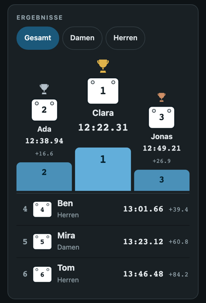
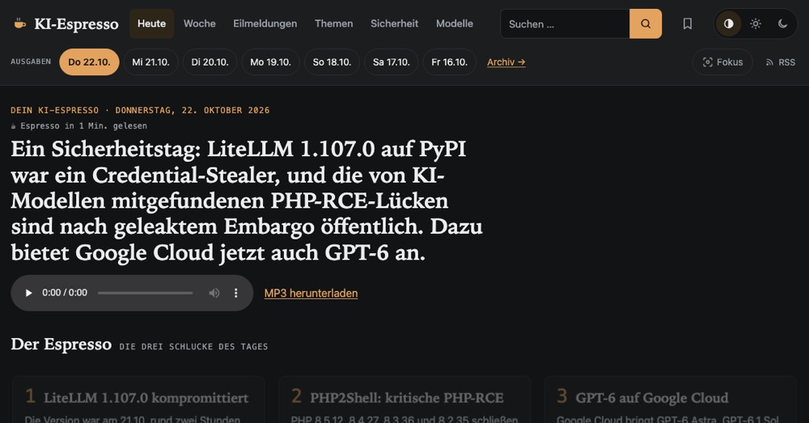
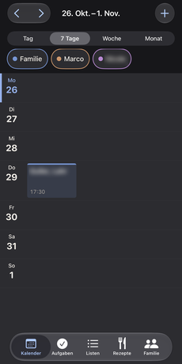
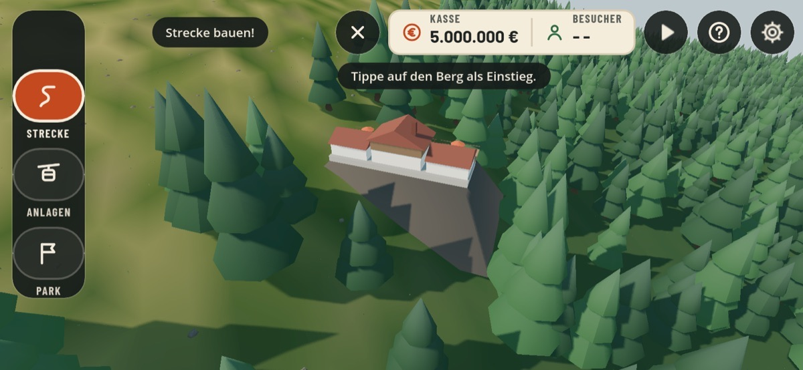
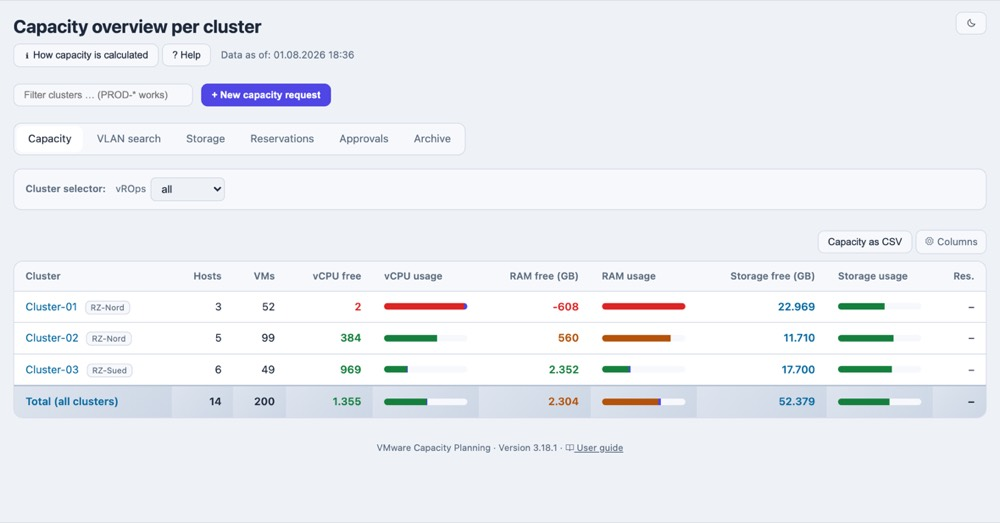
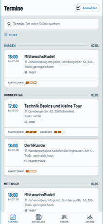
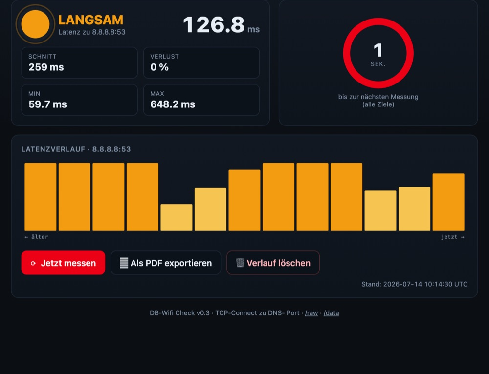
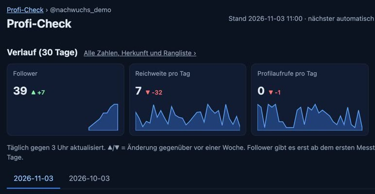

Hallo, ich bin Marco.
Ich baue, was ich brauche.
Teamleiter in der IT · Bastler · Mountainbiker
Abends baue ich mit Claude Dinge, die ich selbst brauche – vom Zeitmesser fürs Rennen bis zur KI-Morgenzeitung.
Was ich gebaut habe
Von der Lichtschranke bis zum Familienkalender.

einfachstoppen
Rennen stoppen mit zwei Handys. Kein Konto, keine Installation. Dazu Lichtschranke und Kamera-App als genauere Zeitquellen – und ein Comic in 38 Sekunden.

ki-espresso.de
Jeden Morgen die KI-Nachrichten auf Deutsch, zum Lesen und Hören.
ki-espresso.de
Family App
Familienkalender fürs iPhone und iPad: Termine, Aufgaben, Listen und Rezepte, mit Abgleich zu Outlook.
family.bockelbrink.net
My little Bikepark
Strecken in den Ettelsberg zeichnen und Besucher anlocken.
mylittlebikepark.de
Kapazitätsplanung
Wie viel Platz ist in VMware- und Kubernetes-Clustern frei, und wer hat schon reserviert? Liest Aria Operations und Prometheus.

MTB Bielefeld
Termine, Anmeldungen und Fotoalben für den Verein.
Kein Link: steht in keinem App Store.

db-wifi-check
Misst im Cluster, wie schnell DNS-Server antworten.

insta-manager
Instagram-Beiträge für den Verein planen, von Claude prüfen lassen und erst nach Freigabe veröffentlichen – Kinderkonten nur mit OK der Eltern.
Kein Link: nur für den Verein.
zitadel-netbird-sync
Zitadel-Projekte als NetBird-Gruppen, auch mit NetBird Cloud.
claude-matrix-bot
Ein Chat-Bot, der mein Home Assistant vom Handy aus bedient.